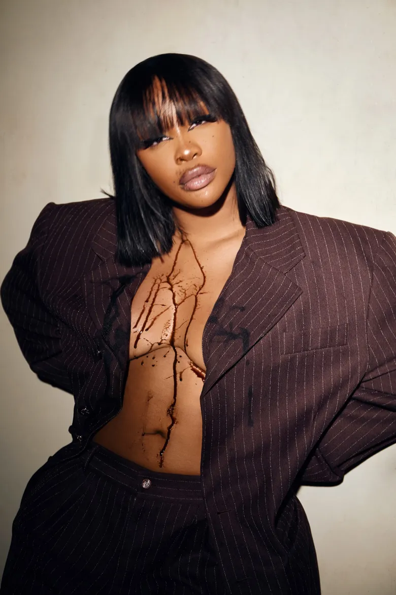

How They Became To Be
The artists Doja Cat, Billie Eillish, and SZA (Shown below) has made it to the top with hard work. Doja cat began her career by posting music on SoundCloud as a teenager, Billie Eillish began making music with her brother Finneas in her bedroom, and SZA began by releasing her own music online which led to her having big opportunities. They all started from the bottom then made it to the top in their own way.

